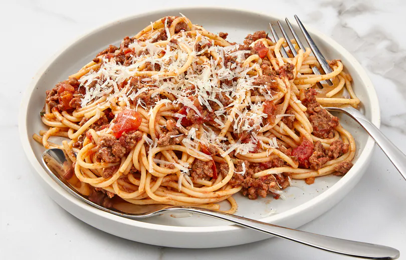

Recipe Information
Prep Time: 15 minutes
Cook Time: 1 hour
Servings: 4
Difficulty: Intermediate

Delicious homemade spaghetti bolognese
Ingredients
- 2 tbsp olive oil
- 1 onion, chopped
- 2 garlic cloves, minced
- 500g ground beef
- 400g can chopped tomatoes
- 2 tbsp tomato paste
- 1 tsp dried oregano
- Salt and pepper to taste
- 400g spaghetti
- Fresh basil and grated Parmesan (optional)
Instructions
- Heat olive oil in a large pan over medium heat.
- Cook the onion and garlic until soft and fragrant.
- Add ground beef and cook until browned.
- Stir in chopped tomatoes, tomato paste, oregano, salt, and pepper.
- Simmer uncovered for 45 minutes, stirring occasionally.
- Meanwhile, cook spaghetti according to package instructions.
- Drain pasta and serve topped with Bolognese sauce.
- Garnish with fresh basil and grated Parmesan if desired.
 Ingredients used to Garnish spaghetti_bolognese
Ingredients used to Garnish spaghetti_bolognese
Cooking Tips
For richer flavor, let the sauce simmer longer or make it a day ahead. You can also add a splash of red wine while cooking the beef for added depth.
Nutrition Facts (per serving)
- Calories: 520
- Protein: 28g
- Carbohydrates: 45g
- Fat: 24g
- Fiber: 4g